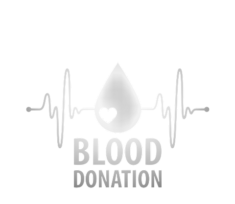

What I do !

Blood Donation systemA blood donation system is essential for a variety of people, including doctors, donors, recipients, patients, and other general users, and it is a noble humanitarian act. The procedure is straightforward, and it helps those with medical conditions to sustain their lives and to save lives in times of need. Blood Donation systemA blood donation system is essential for a variety of people, including doctors, donors, recipients, patients, and other general users, and it is a noble humanitarian act. The procedure is straightforward, and it helps those with medical conditions to sustain their lives and to save lives in times of need. Blood Donation systemA blood donation system is essential for a variety of people, including doctors, donors, recipients, patients, and other general users, and it is a noble humanitarian act. The procedure is straightforward, and it helps those with medical conditions to sustain their lives and to save lives in times of need. Blood Donation systemA blood donation system is essential for a variety of people, including doctors, donors, recipients, patients, and other general users, and it is a noble humanitarian act. The procedure is straightforward, and it helps those with medical conditions to sustain their lives and to save lives in times of need. Blood Donation systemA blood donation system is essential for a variety of people, including doctors, donors, recipients, patients, and other general users, and it is a noble humanitarian act. The procedure is straightforward, and it helps those with medical conditions to sustain their lives and to save lives in times of need. Blood Donation systemA blood donation system is essential for a variety of people, including doctors, donors, recipients, patients, and other general users, and it is a noble humanitarian act. The procedure is straightforward, and it helps those with medical conditions to sustain their lives and to save lives in times of need. |